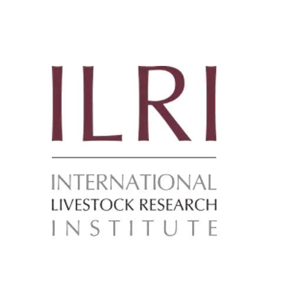
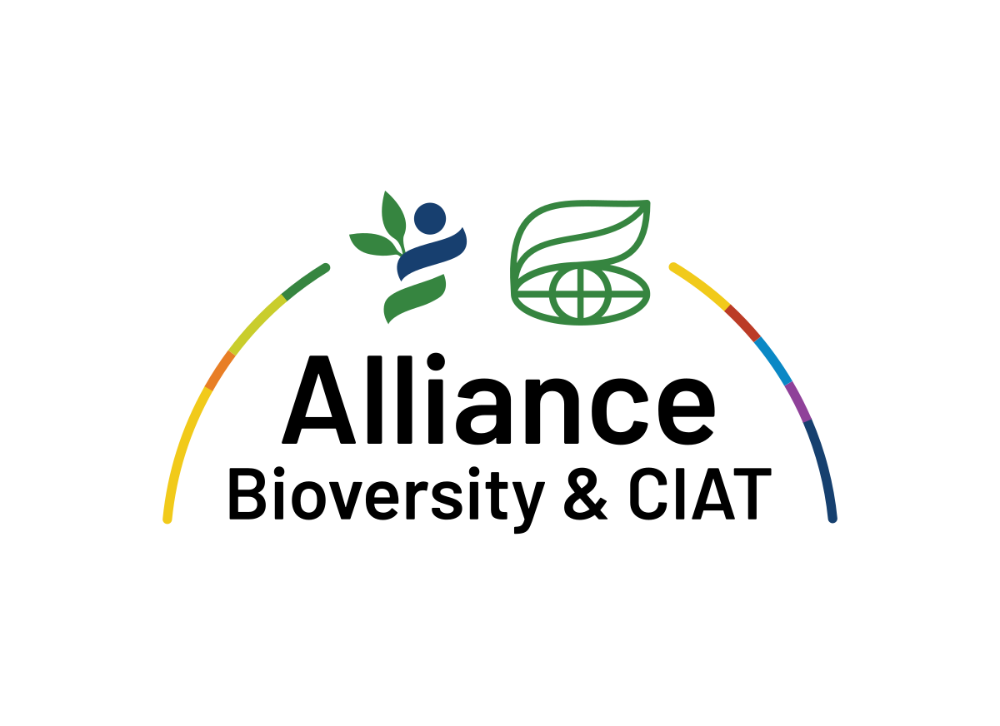

    
    <div class="bg-slate-50 relative pt-40 pb-20 lg:pt-44 dark:bg-gray-900">
        <div class="relative xl:container m-auto px-6 md:px-12 lg:px-6">
            <h1 class="sm:mx-auto sm:w-10/12 md:w-2/3 font-black text-teal-900 text-4xl text-center sm:text-5xl md:text-6xl lg:w-auto lg:text-left xl:text-7xl dark:text-white">Run successful Full and <br class="lg:block hidden"> <span class="relative text-transparent bg-clip-text bg-gradient-to-r from-teal-600 to-cyan-500 dark:from-teal-400 dark:to-cyan-300">Hybrid Farming Sys</span>.</h1>
            <div class="lg:flex">
                <div class="relative mt-8 md:mt-16 space-y-8 sm:w-10/12 md:w-2/3 lg:ml-0 sm:mx-auto text-center lg:text-left lg:mr-auto lg:w-7/12">
                    <p class="sm:text-lg text-gray-700 dark:text-gray-300 lg:w-11/12">
                        Enhance Your Mixed Farming System (MFS) Unlock the full potential of mixed farming with our expert guidance. From daily monitoring to crop-animal integration, our solutions optimize both full and hybrid systems to boost productivity.
                    </p>
                    <span class="block font-semibold text-gray-500 dark:text-gray-400">The best companion bot for your chat app.</span>

                    <app-counters></app-counters>


                    <h2 class=" font-black text-gray-500">Stakeholders</h2>
                    <div class="pt-0 flex gap-x-6 lg:gap-x-7 space-y-0 m-0 justify-between  lg:w-2/3">
                        
                        
                        
                        
                        
                        
                        
                    </div>
                </div>
                <div class="mt-12 md:mt-0 flex justify-end  -right-2 lg:w-7/12">
                    <div class="w-3/4">
                        <!-- <div aria-hidden="true" class="absolute scale-75 md:scale-110 inset-0 m-auto w-full h-full md:w-44 md:h-44 rounded-full rotate-45 bg-gradient-to-r from-sky-500 to-cyan-300 blur-3xl"></div> -->
                        
                    </div>
                </div>
            </div>
        </div>
    </div>
